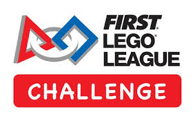
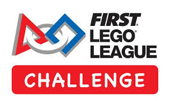

Team Subo-ға қош келдіңіз!
Біз Jayiq FIRST LEGO League Championship жарысының алғашқы кезеңінен өтіп, Batys FIRST LEGO League Championship-ке барамыз. Біздің жолымызды қадағалаңыз!
"Sustainable Urban Barrier Overflow"
"Тұрақты қалалық қамал мен артық суды басқару"
Галерея


Жобамыздың жұмыс жасау принципі
1. Ультразвуковой датчик
Ультразвуковой датчик қолданушылардың немесе объектілердің қашықтығын анықтау үшін қолданылады. Ол TRIG пініне сигнал жіберіп, ECHO піні арқылы оның оралу уақытын өлшейді. Осылайша, біз объекті мен датчик арасындағы қашықтықты есептей аламыз. Бұл ақпарат кейінірек жүйеде қауіпсіздік шараларын іске қосу үшін пайдаланылады.
2. Су-сенсоры
Су сенсоры судың деңгейін өлшейді. Бұл сенсор судың деңгейі жоғары болған кезде, жоғары деңгейді көрсететін сигнал береді. Бұл маңызды, себебі су деңгейі жоғары болғанда, қауіпсіздік шаралары қажет болуы мүмкін. Ардуино осы сенсордың оқулары негізінде жүйені басқаруға мүмкіндік береді.
3. Қадамды-Моторлар
Біз екі қадамдық моторды қолданамыз, олар қақпаларды ашып-жабу үшін қолданылады. Әрбір мотор төрт түрлі қадамды орындайды. Ардуино оларды басқарып, қажет кезде қақпаларды ашып немесе жабады. Әрбір қозғалысқа арналған қадамның нақты реті Ардуиноның басқару логикасына сәйкес орындалады.
4. Buzzer және светодиодтар
Қауіп-қатер туындаған кезде, жүйе қуаттылығы төмен, су деңгейі жоғары немесе қашықтық тым қысқа болса, қақпаларды ашу, қызыл светодиодты қосу, сондай-ақ белгілі бір уақыт ішінде буззерді іске қосу арқылы хабарлайды.
Команда туралы
Біздің команда Subo – талантты және жанқиярлықпен жұмыс істейтін жас инженерлерден тұрады. Біз әрдайым инновациялармен жұмыс істейміз және осы жоба арқылы көптеген қиындықтарды шешуге дайынбыз.
Команда мүшелері:
- Рахметов Нурали - Команда бағдарламаушысы, жоба үйлестіруші
- Теңізбай Айым - Команда зерттеушісі
- Қаратаев Ерасыл - Команда инженері
- Ахметова Мадина - Дизайнер
- Қаман Жібек - SMM specialist
- Төлеген Аяжан - Мобилограф
Бізді Instagram-да бақылаңыз!
@subo_fll_challange